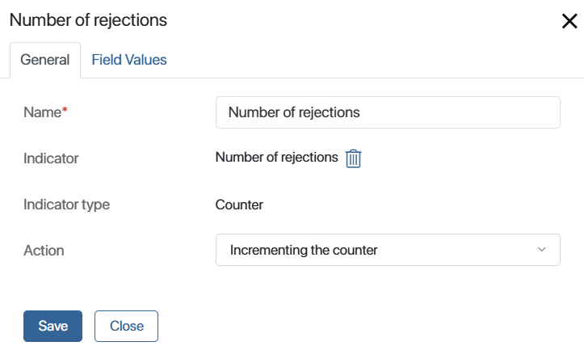
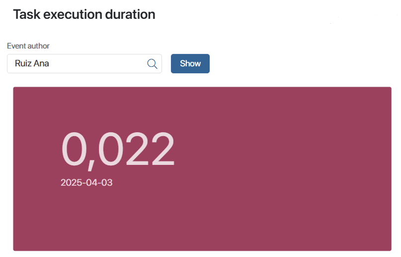

Indicator of the Counter type
Let's see how to customize the indicator using the Draw up and approve the contract process as an example. It consists of the following steps:
- The sales rep prepares the contract and sends it to the manager for approval.
- After the manager reads the contract, they can reject it, send it for revision, or approve it.
- If the contract has been sent for revision, the sales rep will get a task for making corrections. Then, the contract will be resubmitted to the manager for approval.
- If the contract has been approved, the sales rep will arrange a meeting with the customer and the parties will sign the contract.
You can add an indicator to the process to count how many times the sales rep has resubmitted the contract for approval after revision. This will allow you to analyze the employee's work by tracking the number of iterations until the contract is correctly executed.
Step 1: Create an indicator of the Counter type
Create an indicator of the Counter type, e.g. Number of rejections, and publish it.
Step 2: Set up a business process with an indicator of the Counter type
- Go to the designer of the Draw up and approve the contract business process.
- To find out how many times the sales rep has resubmitted the contract for approval after revision, use the Set Indicator’s Value activity. Place it on the process diagram after the Make corrections to the contract task.

- Double-click the activity and open its settings. Then enter a name and specify the Number of rejections indicator.
For an indicator of the Counter type, fill in the Action field. To record how many times the contract has been resubmitted for approval, select Incrementing the counter.

You do not need to fill in the data on the Field Values tab. In this example, only the system properties of the indicator are used, into which the values from the process are automatically written.
- Save the activity settings and publish the process.
Step 3: Customize the chart for the Counter type indicator
- Create a separate page and place the Chart widget on it. This way you will be able to visualize the data after the execution of a process instance with an indicator.
- In the widget settings on the Chart tab, fill in the fields:
- Data source. Select Indicator.
- Indicator. From the list of published indicators, select Number of rejections.
- Category. Specify the Event author property to see which sales reps performed the task to revise the contract.
- Chart indicator. Select Amount to display how many times the event author performed the task.
- Data display. Select Units.
- Leave the rest of the settings as they are by default.
- On the Custom Filters tab, you can select the properties of the indicator to filter the data on the chart. To track the number of times an employee worked on a task over a certain period, select Event time.
- Save the widget settings and publish the page.
A manager can specify a period and view on the chart how many times a sales rep has performed a task to revise a contract. The indicator includes all completed instances of the process during this period. If several sales reps are involved in contract finalization, you can compare the efficiency of their work.

Indicator of the Value type
Let's see how to customize the indicator using the Approve the deal amount process as an example. It consists of the following steps:
- The sales rep prepares a draft contract and specifies a preliminary deal amount in it. To do this, they fill in the Amount field on the task form.
- Then they discuss the draft contract with the customer and offer additional services.
- If the customer agrees to purchase the services, the sales rep changes the deal amount. To do this, they use the same Amount field as for the preliminary amount.
With the help of the indicator, we can track the difference between the preliminary and the final amount of the deal and display it on the chart.
Step 1: Create an indicator of the Value type
- Create an indicator of the Value type. For example, Deal amount change.
- Add properties to the context of the indicator to record two amounts from the process. To do this, go to the Context tab and add the Deal amount variable of the Category type. Set the values: Preliminary deal amount and Final deal amount.
- Publish the indicator.
Step 2: Set up a business process with an indicator of the Value type
- Go to the designer of the Approve the deal amount business process.
- To record the value of the preliminary and the final amount, place the Set Indicator’s Value activity before and after the Offer additional services to the customer task on the flow chart.
- Double-click the activity that is placed before the discussion of the additional services and go to its settings. Name it Preliminary amount and specify the Deal amount change indicator.
Then, on the Field Values tab, fill in the data so that the values from the process are passed to the indicator:
- Deal amount. Select the indicator variable and map it to the Preliminary deal amount value. Thus, the amount before the discussion with the customer will be recorded as the Preliminary deal amount.
- Value. Select the system property of the indicator and map it to the process context Amount variable, in which the sales rep specifies the deal amount at this step.
- Double-click the activity that is placed after the discussion of the additional services and go to its settings. Name it Final amount and specify the Deal amount change indicator.
On the Field Values tab, specify the variables:
- Deal amount. Map the indicator variable to the Final deal amount value. As a result, the deal amount after the discussion with the customer will be recorded as Final deal amount.
- Value. Map the system property of the indicator to the process context Amount variable, where the sales rep enters the new amount after revising the contract.
- Publish the process.
Step 3: Customize the chart for the Value type indicator
- Create a separate page and place the Chart widget on it to visualize the indicator.
- In the widget settings on the Chart tab, fill in the fields:
- Data source. Select Indicator.
- Indicator. From the list of published indicators, select Deal amount change.
- Category. Specify the context variable of the Deal amount indicator to display the preliminary and the final amount on the chart.
- Chart indicator. Specify the Value indicator field and select Value. Then the chart will display the numeric values entered by the sales rep in the Amount field on the Prepare the contract draft and Offer additional services to the customer task forms.
- Data display. Select Units.
- Leave the rest of the settings as they are by default.
- On the Custom Filters tab, you can select indicator properties to filter data on the chart. To track the difference between the preliminary and the final deal amounts for the period, select Event time.
- Save the widget settings and publish the page.
The manager can specify a period and view the values recorded for the preliminary and the final deal amounts on the chart. The indicator includes all completed process instances for that period.

Indicator of the Time Interval type
Let's see how to customize the indicator using the Issue a contract process as an example.
With the help of this indicator, you can find out how much time a sales rep spent on the task for issuing the contract. You can record the task start and end dates using a script.
Step 1: Create an indicator of the Time Interval type
Create an indicator of the Time Interval type. Name it, e.g Task execution duration, and publish it.
Step 2: Set up a business process with an indicator of the Time Interval type
- Go to the designer of the Issue a contract business process.
- On the Context tab, add the Task start date and Task end date variables of the Date/time type. The task start and end times will be recorded in them.
- On the Scripts tab, add the following commands:
async function start_time(): Promise<void> {
Context.data.task_start_date = new Datetime();
}
async function finish_time(): Promise<void> {
Context.data.task_end_date = new Datetime();
}
- Go to the process flow chart. Add the Script activities: place one before the Issue a contract task and the second one after it.

- In the settings of the Script activity for recording the date of task assignment, specify the
start_timefunction. In the activity settings for recording the completion date, specify thefinish_timefunction. - To pass to the indicator the time from the assignment and to the completion of the task, use the Set Indicator’s Value activity. Place it on the scheme of the business process after the script and task activities.
- Double-click the activity and customize its settings. On the Main tab, enter a name, e.g. Record time interval, and select the Task execution duration indicator.
On the Field Values tab, fill in the data to pass the values from the process to the indicator:
- Beginning of interval. Select the system property of the indicator and map it to the process context Task start date variable. This way you will pass the task assignment date to the indicator.
- Interval end. Select the indicator property and map it to the process Task end date variable. Then you will pass the task completion date into it.
- Publish the process.
Step 3: Customize the chart for the Time Interval indicator
- Create a separate page and place a Chart widget on it to visualize the indicator.
- In the widget settings on the Chart tab, fill in the fields:

- Data source. Select Indicator.
- Indicator. From the list of published indicators, select Task execution duration.
- Category. Specify Event time and select By dates. This way you will be able to see how long an employee performed a task on a certain day.
- Chart indicator. Specify Value and select Average.
- Data display. Select Units.
- Chart type. Select Number cards.
- Leave the rest of the settings as they are by default.
- On the Custom Filters tab, you can select the indicator properties to filter the data on the chart. To track a specific employee's work on a task, select Event author.
- Save the widget settings and publish the page.
The manager can select a sales rep’s name and view on the chart how many hours elapsed from the time the task was assigned until the employee closed it. The indicator includes all completed process instances for the day.

Found a typo? Select it and press Ctrl+Enter to send us feedback